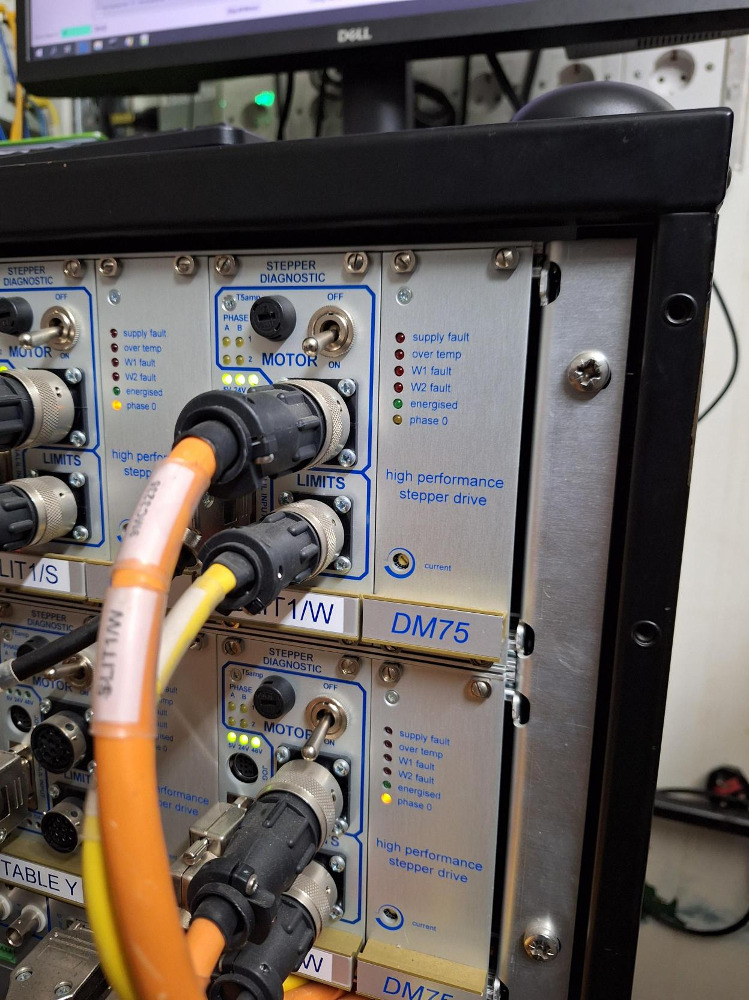

Motors Trouble Shooting
General
Motors are hitting a hard limit in an unexpected place
This implies that the controller has lost it’s positions. The best thing to here is to rehome the axis. This can be done by selecting the offending motor in the table of motors and pressing the home button. Note that you should home one axis at a time as homing multiple axes in parallel can lead to the operation timing out.
Jaw blade(s) are stopping in an unexpected place
Check if the motor is part of a jaw set. Jaws may define a minimum gap, which sends a stop command to both motors in the jaw set if the current gap is smaller than the defined minimum. This occurs both during a standard move, and during a home.
This calculation may be incorrect if motor positions have been lost. The minimum gap is configured using PVs of the form:
IN:INST:MOT:JAWS<N>:VGAP:MIN:SP
On many instruments, this has been set to -2147483648 to effectively disable the minimum-gap checking. This can
also be set temporarily.
Position needs to be restored
Note: a script exists for this
Positions of the motor can be restored/set without setting an offset. These can be needed if the motor power cycles for example on a power cut. The recommendation is to do a home if possible but if not the position can be set without this.
Find the latest value from the archive with:
SELECT t.name, s.smpl_time, s.float_val FROM archive.sample s LEFT JOIN archive.channel t ON s.channel_id = t.channel_id WHERE t.name LIKE "%MOT:MTR0101%RBV%" AND s.smpl_time > "2017-11-16 00:00:00" ORDER BY s.channel_id, s.smpl_time DESC;
Open the motor details opi for given motor
Click on
SetinCalibrationareaSet the
UserMoveAbsto the value from the query aboveClick on
UseinCalibrationareaMake sure you also follow instructions in the section
Galil Controller is Off while IOC running
Galil Controller is Off while IOC running
When the Galil IOC is off it seems to incorrectly save the wrong state for deenergise off and energise state. This causes the motor to not react as expected. Make sure that these are reset. The way to find these states is to search autosave log with:
grep AUTOONOFF_CMD *
grep ON_CMD *
Then click the buttons to set it up correctly.
Galil Communication
Can not communicate with the Galil
This is not shown well in the OPI it just has weird values. Look in the log file to check near GalilCreateController it says sevr=info Connected to XXX t 1000 -mg 0, DMC2280 Rev 1.0o-CM, 46949, IHB IHD not sevr=major connect: 5004 OPEN ERROR. Galil::Galil() failed to open Ethernet host
If it isn’t connected try to ping the control address. If this isn’t alive check, via the serial cable, the Galil address. The command for this is IA?.
No communication with Galil even on restart of IOC
If in doubt it is best to plug a serial cable directly into the control box and see if you can see anything. When connected correctly it should give a colon, :, after pressing return.
If you get a > this means that it has got into an internal configuration mode which you can’t get out of without rebooting the Galil. This has been seen when communicating with 4000 series through the ethernet cable.
Partial communication I can talk to it using hyper term on the instrument but Driver does not connect
This may be because the hardware flow control is blocking the communications; the driver sets hardware flow control on. Use the serial sniffer to record data coming to the crate; if there is none this is probably the cause. This can be caused by serial cables which do not have this line internally connected. Use the laptop to find the place where the serial signal is no longer being transmitted and replace cable.
Galil General
The Galil controller has been power cycled
The Galil driver keeps track of this by setting a variable on the controller via MOT:DMC[controller number]:PWRDET:SP and monitoring the value on the galil. If MOT:DMC[controller number]:PWRDET:SP and MOT:DMC[controller number]:PWRDET diverge then the galil has lost power and the positions may not be correct. This is checked every 5 minutes, and monitored by Nagios. The value is automatically changed after a successful check to avoid burning a value into the galil leading to a power cycle being missed.
If Nagios is reporting a power cycled galil (ERROR: galils 0x power check failed), ensure the positions have been corrected (by homing or other means, this may be unnecessary if there are absolute encoders), and clear the error by writing to IN:[INSTRUMENT]:MOT:DMC[controller number]:PWRDET:RESET:SP.
The Galil reports being at home when it is at a limit, not at the limit switch
Ensure the limit_as_home flag is correctly set, see here
Something is Weird I want Maximum Debugging
Maximum debugging can be achieved by adding to your st.cmd:
`epicsEnvSet("GALIL_DEBUG_FILE", "galil_debug.txt")`
This will generate a file containing all the commands sent and received from the Galil.
Error Downloading Homing Program
If you are using RS232 then you need to enable software flow control on the galil or you will get messages like
Error downloading code model DMC2280 Rev 1.0o-CM, address COM6 38400 msg 1011 TIMEOUT ERROR.
xon/xoff is enabled via a dip switch on the Galil. The Galil must be power cycled if this DIP switch is changed
The Galil is twitching around a position
If the controller has recently been replaced this could be because the jumpers inside the Galil are set incorrectly for the motor type. You will see an error like
Galil::command("MTH=-2.5") got ? instead of : response. TC1 returned "96 SM jumpers must be installed for stepper motors"
in the logs. To fix this you must ask electronics to confirm the jumper location inside the controller.
Galil Movement Problems
The axis will not move, a message gets put in the log of “Begin not valid with motor off”
There is a Galil specific PV called MTRXXXX_AUTOONOFF_CMD which controls whether an axis automatically powers up when given a move (found at the bottom of the motor details OPI). This should normally be On so that the motor energises before a move and switches off after a move. In some cases, the motor axis needs to be energised for the whole time, when the axis is under great load or the motor is old. In this case, the auto de-energise should be No the energised state should be energise. The “motor off deadband” should also be set to a negative number, -1, so that the motor does not turn itself off after a move, this is found in the engineering screen, Motor off deadband. If you don’t set this to -ve it may not deenergise the motor but this will be unreliable, we think when you don’t have an encoder it won’t deenergise the motor. There is a warning that reads Motor off deadband is not small enough, motor may deenergise after move. which will show in this later case.
Galil won’t move after stalling and does not send motor pulses - soft limits
To show the soft limits on the controller use MG _BLx to show reverse limit and MG _FLx to show forward limit in the engineering view OPI.
It may be that the soft limit is applying a FL or BL value from the motor record - homing should 0 the motor pulses which will fix this. You can also raise the soft limit from the IBEX table of motors which will raise the FL/BL value and enable moves again, provided it does not stall again.
Disabling soft limits
To disable soft limits for an axis send BLx=-2147483648 and FLx=2147483647 where x is the Axis character (A-H)
The axis will not move away from a limit regardless of direction, a message gets put in the log of “move failed, wlp active” or “Wrong limit protect stop motor”
There is a Galil specific PV called MTRXXXX_WLP_CMD which controls whether an axis treats both limits as high and low. The default setting is On, it should be set to Off.
Galil position is not stable at setpoint
If a Galil is particularly worn, or carries an unusually heavy load, it may not stay where it is after going to a setpoint but sag down slightly. In those cases it might help to turn the “auto de-energise” setting on the Galil off (the PV is MTRXXXX_AUTOONOFF_CMD). This setting decides whether the Galil automatically powers off when stationary or not. Note that if this is turned off, the Galil will just stay in whichever state it was last (pv to check: MTRXXXX_ON_STATUS), so you may have to manually switch the power on the Galil back on again (pv to set: MTRXXXX_ON_CMD), otherwise it will not move.
Do check with the instrument scientists before you change this. If a motor is always powered when it is not meant to be, it may overheat.
Galil is not correctly setting accelerations
The motor record calculates acceleration in quite a different way than used to under SECI. Check that you have set acceleration correctly given that it is defined as seconds to get between VBAS and VELO (this means we normally want VBAS to be set to zero.
There is also a minimum acceleration on galil controllers which is 1024 (in galil units). This means that if you set the acceleration to a very low value, the acceleration might get “rounded up” to a higher value. You can check what the galil believes the acceleration is by issuing MG _ACA for example in the galil engineering view arbitrary command interface.
The limits are both made/on/limit light are lit
This occurs when power is cut to the limits. The main cause for this is that the safety system has been engaged as this will cut power to the whole rack of Galils. However, there could be other reasons such as in the IMAT Lens Adjustment
The motor is surrounded by a red border in the table of motors
This indicates that the motor does not believe it is at setpoint. The following algorithm is applied to decide whether the motor is at setpoint or not:
If the motor is moving, it is always “at setpoint” - this is to prevent red borders during normal moves
Otherwise, the absolute difference between VAL and RBV must be less than a tolerance. This tolerance is given by the following (in order of preference):
Retry deadband (
RDBD) ifRDBD>MRES(the retry deadband cannot be set less than MRES - the motor record prevents this)Setpoint deadband (
SPDB) ifSPDB> 010 * MAX(ABS(ERES), ABS(MRES))
_Note the above is done here: https://github.com/ISISComputingGroup/EPICS-axis/blob/master/axisApp/Db/axis_base.template#L160_
If motion is completing successfully but you still see a border, you might need to increase the tolerance in the first instance by increasing retry deadband. Check with the scientists what an achievable precision is.
Controller can communicate, soft limits are fine, but cannot move motor which is showing a W1 fault
W1 or W2 fault is a winding fault which can happen to the drive cards of the motor. This has happened a few times on ALF specifically after power has been cut. This issue shows up as a little red LED on the drive card itself. To fix, power cycle the drive card itself using the off/on toggle switch on the front: 
ZOOM PGC
The PGC on ZOOM (MTR0101 and MTR0102) uses absolute encoders. To set these up after a power cycle of the Galil the following must be sent to the device:
SYA=0
SSA=1,26,27,0<15
SYB=0
SSB=1,26,27,0<6
(See the Technical Report on the use of Absolute Encoders at ISIS in the manuals area for more information)
This axis is odd in that the first axis is a normal motor/encoder (albeit with absolute encoders) but the second axis is just an encoder on the same device and is used to detect any motion issues. The pre-move string in the first axis is used to make sure the encoder is correctly set up for that axis but is not long enough to do it for both axes (see https://github.com/ISISComputingGroup/IBEX/issues/6312). This means if the power gets cycled the second axis may appear not to move until the above settings are reapplied.
sans2d tank will not home/move
some of the axes on SANS2D are part of the collision avoidance system, which means they are kept in “pause” of SPMG. To home these you need to select home and then on the low level motor screen select “Go” on SPMG to action the home.